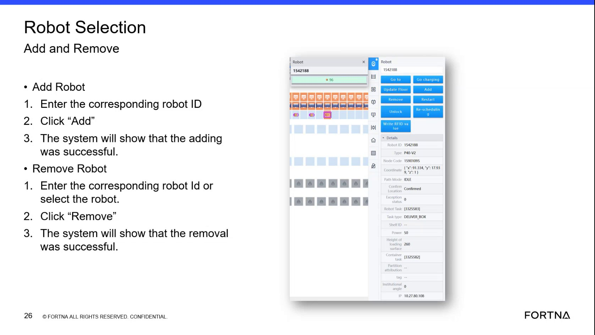

| Procedure ID | proc_access_the_rms_web_application_to_perform_robot_selection_actions_v1 |
|---|---|
| Title | Access the RMS Web Application to Perform Robot Selection Actions |
| Procedure Type | reference |
| Primary Role | L1_support |
| Support Safe | Yes |
| Validation Status | needs_sme_review |
| Merge Status | source_finalized |
This source describes how support personnel can reach the Geek Plus RMS or related web application view used for Robot Selection actions. Local access is available from a device connected to the OT network using the site IP address. Remote access requires authorization to use the UPS VPN through Z Scaler before using the site address or RMS address. The source also notes that local teams can use shop-floor HMI stations where this view is displayed.
Use this reference when support personnel need to reach the RMS or web application view used for Robot Selection add or remove actions, either from an OT-network-connected device, an authorized remote connection, or a local shop-floor HMI station.
Responsible role: L1_support
Instruction:
Determine whether access will be local on the OT network or remote.
Expected result:
A valid access path is selected before attempting to open the application.
Stop or Escalate If:
Responsible role: L1_support
Instruction:
For local access, use a laptop, computer, or other device connected to the OT network and open the web software application through its IP address as described in the source.
Expected result:
The RMS or web application opens from the OT-network-connected device.
Screens / Images:

Stop or Escalate If:
Responsible role: L1_support
Instruction:
For remote access, confirm authorization to use the UPS VPN through Z Scaler before attempting to reach the OT-network-hosted application.
Expected result:
Remote authorization status is confirmed before access is attempted.
Stop or Escalate If:
Responsible role: L1_support
Instruction:
After remote authorization is available, enter the address or RMS address for the particular site to access Geek Plus RMS.
Expected result:
Geek Plus RMS opens for the selected site through the authorized remote path.
Screens / Images:
Stop or Escalate If:
Responsible role: operator
Instruction:
If local shop-floor access is needed, use one of the physical HMI stations where this view is displayed.
Expected result:
The user reaches the RMS view from a shop-floor HMI station.
Screens / Images:
Stop or Escalate If: